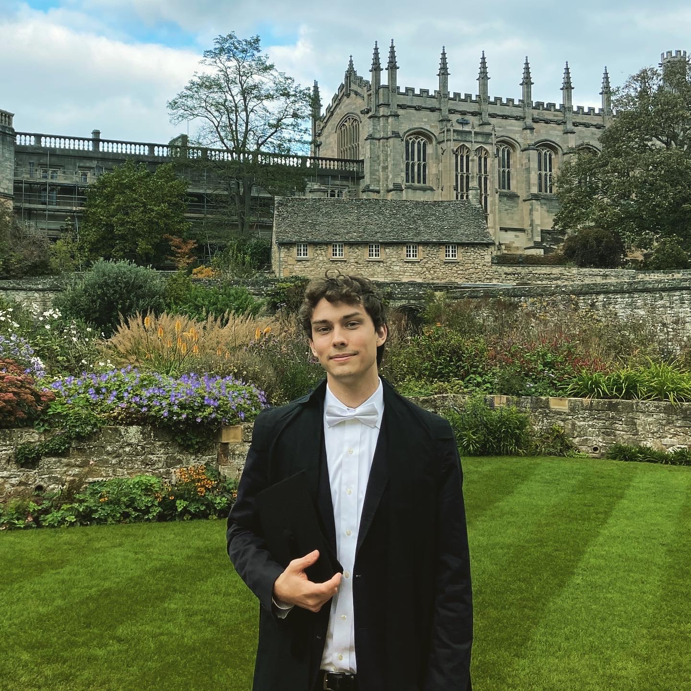

About

I am a graduate student at the University of Oxford interested in pursuing computational biology research. I'm currently studying an MSc in Statistical Science, which is a twelve-month Master's degree that teaches modern computationally-intensive approaches and includes a research dissertation. I am also working on the research from my summer internship at NASA Ames Research Center, for which I am developing machine learning models to reveal biosignatures that inform life-detection missions.
After high school, I spent a year at Juilliard studying the cello. However, my interests became too broad and academic for a career in music. As a result, I transferred late in the summer to Drew University where I studied as a physics major and mathematics minor. Initally aiming for a medical career, I gradually discovered my passion for mathematical modeling and gaining insights from large, complex datasets. My undergraduate research was in trying to understand the mostly unconscious cognitive process that occurs when solving an anagram puzzle. To do this, I designed and oversaw an original eye-tracking experiment. From the coordinate-time-series data (90 million rows), I obtained new results and presented them at a neuroscience conference.
A huge motivation for me has been my inspiring brother. My hobbies include visiting nature preserves and making occasional contributions to Wikipedia.